Most replies fine, 1 in 20 lateБольшинство ответов в порядке, 1 из 20 опаздывает
Not an average problemНе проблема среднего
Five observable skills, one stretch
Пять наблюдаемых навыков, один стретч
Topic 06 · draft · bounded examples
01
Explain degradation through two finite resources and prefill/decode interference.Объясни деградацию через два конечных ресурса и интерференцию prefill/decode.
02
Compute a KV budget and freeze a knee prediction before measuring.Посчитай KV-бюджет и заморозь предсказание колена до измерений.
03
Run controlled 8/32/64/128 waves with a terminal-outcome journal.Проведи контролируемые волны 8/32/64/128 с журналом терминальных исходов.
04
Build error-aware curves and locate the knee.Построй кривые с учётом ошибок и найди колено.
05
Choose and defend an operating point under an SLO.Выбери и защити рабочую точку под SLO.
06
Stretch: measure cross-application interference and defend an in-flight cap.Стретч: измерь межприложенческую интерференцию и защити потолок одновременных запросов.
One request has several client-side clocks
У одного запроса несколько клиентских часов
Topic 06 · draft · bounded examples
01
Logical arrivalЛогический приход
Intended work exists before any HTTP call.Задуманная работа существует до любого HTTP-вызова.
20.00 s20.00 с
02
Admission / invocationДопуск / вызов
Waited outside HTTP, then invoked the client call.Ожидание вне HTTP, затем выполнен клиентский вызов.
20.40 / .45
03
First contentПервый контент
First token reaches the client; waiting is not service.Первый токен доходит до клиента; ожидание — не обслуживание.
20.70 s20.70 с
04
TerminalТерминальный исход
Arrival-to-terminal 0.80 s; the HTTP segment is only 0.35 s.От прихода до исхода 0.80 с; HTTP-сегмент — лишь 0.35 с.
20.80 s20.80 с
Which clock includes the external admission wait?
Какие часы включают внешнее ожидание допуска?
Topic 06 · draft · bounded examples
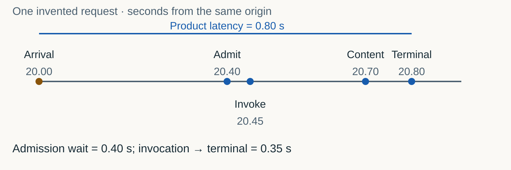
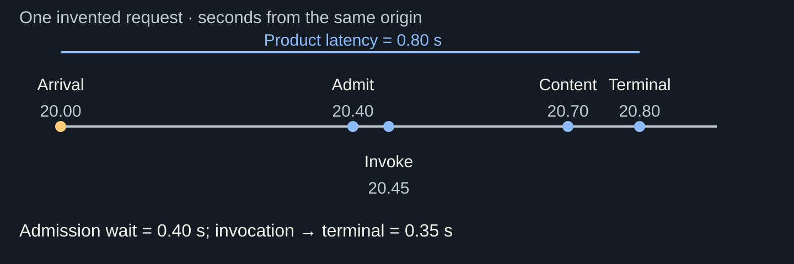
Teaching input / mechanism, not GPU capacity. Invented monotonic timestamps: product latency0.80s, admission wait0.40s, invocation segment0.35s. Client invocation is not the exact socket send.Учебный вход / механизм, а не GPU-ёмкость. Выдуманные монотонные метки времени: продуктовая латентность 0.80 с, ожидание допуска 0.40 с, сегмент вызова 0.35 с. Клиентский вызов — не сам момент отправки сокета.
На позицию: 2 × 36 × 2 × 128 × 2 = 36 864 байта; контекст в 2048 токенов стоит ≈ 72 МиБ.
Ideal payload arithmetic — excludes page tails, tables and workspaces.
Идеальная арифметика полезной нагрузки — без хвостов страниц, таблиц и рабочих областей.
Weights plus KV must fit one 15.36 GiB T4
Веса плюс KV должны влезть в один T4 на 15.36 ГиБ
Topic 06 · draft · bounded examples
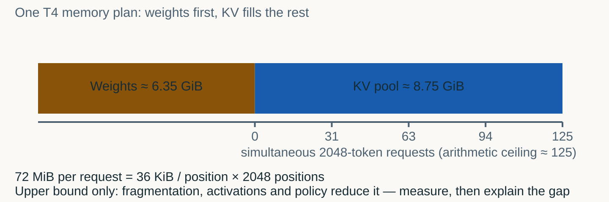
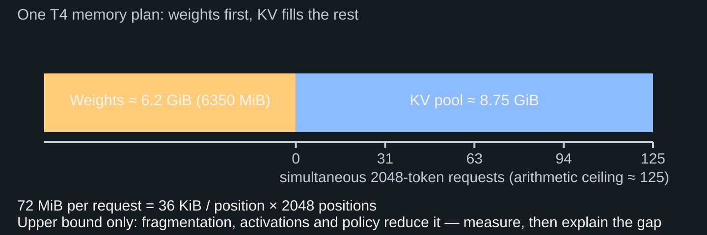
Teaching input / mechanism, not GPU capacity. Declared arithmetic: (15360 − 6350) MiB ÷ 72 MiB ≈ 125 simultaneous 2048-token requests — an upper bound, not scheduler policy.Учебный вход / механизм, а не GPU-ёмкость. Заявленная арифметика: (15360 − 6350) МиБ ÷ 72 МиБ ≈ 125 одновременных запросов по 2048 токенов — верхняя граница, а не политика шедулера.
KV compression: a different answer to the same problem
Сжатие KV: другой ответ на ту же проблему
Topic 06 · draft · bounded examples
What we computed
Standard multi-head attention: 36 KiB per position, 72 MiB per full-context request. The budget is arithmetic — a ceiling you can compute before measuring.
Что мы посчитали
Стандартное multi-head attention: 36 КиБ на позицию, 72 МиБ на запрос с полным контекстом. Бюджет — арифметика: потолок, который можно посчитать до измерений.
What MLA does
Multi-head Latent Attention (DeepSeek, FlashMLA): compresses K and V into a shared latent representation. The KV bill per position drops by an order of magnitude — the same GPU holds far more resident contexts.
Что делает MLA
Multi-head Latent Attention (DeepSeek, FlashMLA): сжимает K и V в общее латентное представление. KV-счёт на позицию падает на порядок — тот же GPU держит куда больше резидентных контекстов.
Your prediction is a lab deliverable
Ваше предсказание — сдаваемый артефакт лабы
Topic 06 · draft · bounded examples
Freeze before you measure
Implement kv_budget_bytes, compute the ceiling, write the knee wave you predict — the file is written before Block 1 runs.
The measured knee will sit below 125. Fragmentation, activations, scheduler policy and prefill interference each take a bite; naming them is the point.
Потом объясни зазор
Измеренное колено окажется ниже 125. Фрагментация, активации, политика шедулера и prefill-интерференция — каждый откусывает свою долю; назвать их — и есть смысл задания.
Continuous batching: one compute step at a time
Непрерывный батчинг: один вычислительный шаг за раз
Topic 06 · draft · bounded examples
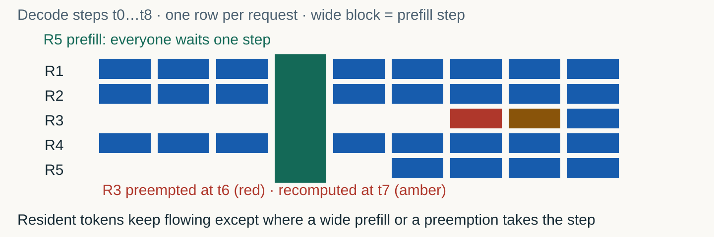
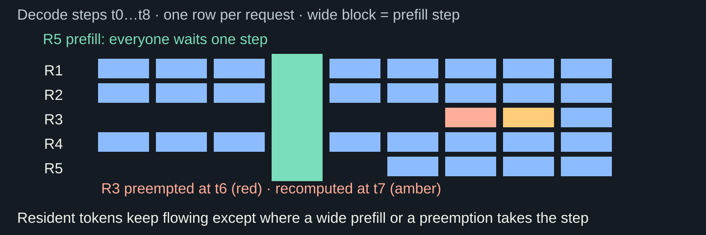
Teaching input / mechanism, not GPU capacity. Illustrative scheduler behavior, not a captured vLLM trace: prefill of R5 stalls every resident request one step; R3 is preempted when KV runs short and recomputed later.Учебный вход / механизм, а не GPU-ёмкость. Иллюстративное поведение шедулера, не захваченный трейс vLLM: prefill R5 тормозит каждый резидентный запрос на один шаг; R3 вытесняется, когда KV не хватает, и пересчитывается позже.
Walk the timeline like a scheduler
Пройди таймлайн как шедулер
Topic 06 · draft · bounded examples
01
t0–t2 decode
R1–R4 each earn one token per shared step.R1–R4 получают по токену за общий шаг.
batching paysбатчинг платит
02
t3 prefill
R5 is admitted; its prefill takes the whole step.R5 допущен; его prefill занимает целый шаг.
everyone waitsждут все
03
TPOT jumpsTPOT прыгает
R1–R4 tokens are one step late — nothing failed.токены R1–R4 опаздывают на один шаг — ничего не сломалось.
interferenceинтерференция
04
t6 KV shortt6: мало KV
R3 is preempted; its pool returns to admission.R3 вытеснен; его пул возвращается допуску.
memory kneeколено памяти
05
t7 recomputet7: пересчёт
R3 restarts from its first token — work is repeated, not free.R3 стартует со своего первого токена — работа повторяется, бесплатно не бывает.
cost of preemptionцена вытеснения
Beyond continuous batching: the async scheduler
Дальше непрерывного батчинга: async-шедулер
Topic 06 · draft · bounded examples
What you just walked
One step at a time: prefill takes a step, everyone waits. The Topic 06 waterfall shows this as grey bands widening when a new request arrives.
Что вы только что прошли
По одному шагу: prefill занимает шаг, ждут все. Водопад темы 06 показывает это серыми полосами, расширяющимися с приходом нового запроса.
What production engines do
The CPU prepares the next batch while the GPU computes the current one — zero dead time between steps. DeepInfer (DeepSeek, Apache-2.0) made this their default; vLLM is moving the same direction.
Что делают продакшен-движки
CPU готовит следующий батч, пока GPU считает текущий, — нулевое мёртвое время между шагами. DeepInfer (DeepSeek, Apache-2.0) сделал это своим дефолтом; vLLM движется туда же.
What each scheduler event costs, and who pays
Сколько стоит каждое событие шедулера и кто платит
Topic 06 · draft · bounded examples
EventСобытие
Immediate effectНемедленный эффект
Who paysКто платит
Prefill insertionВставка prefill
One decode step lost for the whole batchОдин шаг decode потерян для всего батча
Every resident requestКаждый резидентный запрос
Admission blockБлок допуска
New requests wait outside HTTPНовые запросы ждут вне HTTP
Arriving requestsВходящие запросы
Preemption + recomputeВытеснение + пересчёт
Early tokens recomputed from scratchРанние токены пересчитываются с нуля
The preempted request, twiceВытесненный запрос, причём дважды
\(C\)clientsContinuously active populationПостоянно активная популяция
\(R\)secondsMean residence: arrival to terminalСреднее время жизни: от прихода до исхода
\(Z\)secondsMean think time before the next sendСреднее время размышления перед следующей отправкой
Invented: 8 / 0.25 s = 32 req/s offered; double the residence → 16 req/s.
Выдумано: 8 / 0.25 с = 32 запроса/с предлагаемых; вдвое большее время жизни → 16 запросов/с.
Stable population and negligible think time assumed; not measured Qwen capacity.
Предполагаются стабильная популяция и пренебрежимое время размышления; это не измеренная ёмкость Qwen.
Near capacity the mean barely moves — the tail explodes
У ёмкости среднее почти не движется — хвост взрывается
Topic 06 · draft · bounded examples
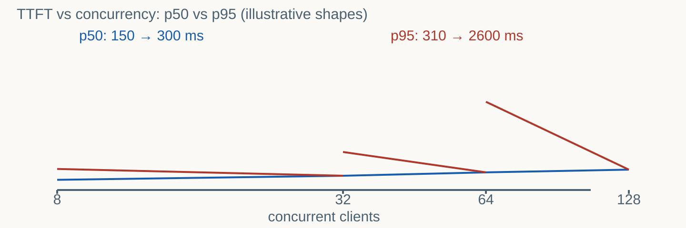
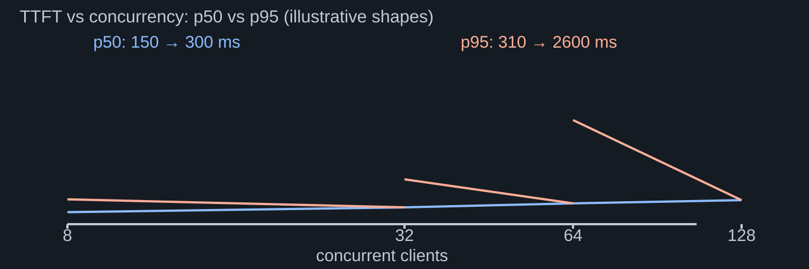
Teaching input / mechanism, not GPU capacity. Illustrative shape: p50 grows mildly while p95 grows explosively near capacity. The measured T4 run never entered this regime — zero timeouts; read the measured slide before quoting.Учебный вход / механизм, а не GPU-ёмкость. Иллюстративная форма: p50 растёт умеренно, p95 растёт взрывно у ёмкости. Измеренный прогон на T4 в этот режим не входил — ноль таймаутов; прежде цитировать, прочтите измеренный слайд.
One experiment, everything else frozen
Один эксперимент, всё остальное заморожено
Topic 06 · draft · bounded examples
Held fixed
Pinned model and revision, frozen public corpus texts, max tokens, temperature 0, seed, timeout budget, closed-loop driver.
Зафиксировано
Запиненные модель и ревизия, замороженные тексты публичного корпуса, max tokens, temperature 0, seed, бюджет таймаута, драйвер замкнутого контура.
Varied
Exactly one factor: concurrency — waves of 8, 32, 64, 128 clients, same per-client quota.
Варьируется
Ровно один фактор: конкурентность — волны из 8, 32, 64, 128 клиентов, квота у всех одинаковая.
Terminal outcomes are data, not noise
Терминальные исходы — данные, не шум
Topic 06 · draft · bounded examples
OutcomeИсход
MeaningСмысл
Journal fieldПоле журнала
completed
HTTP 200 with a full non-empty outputHTTP 200 с полным непустым выводом
output_tokens above zerooutput_tokens выше нуля
timeout
Wall budget exceeded — the request, not the server, gave upСтеночный бюджет исчерпан — сдался запрос, а не сервер
terminal − arrival > budget
server error / connection errorошибка сервера / соединения
5xx / transport failure5xx / транспортный сбой
http_status and exception classhttp_status и класс исключения
truncated
Finish reason length: output hit the capПричина завершения length: вывод упёрся в потолок
finish_reason
A correct completed response is not the same as a useful arrival
Корректный завершённый ответ — ещё не полезный входящий запрос
Topic 06 · draft · bounded examples
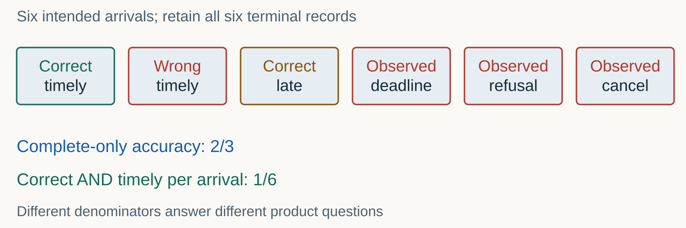
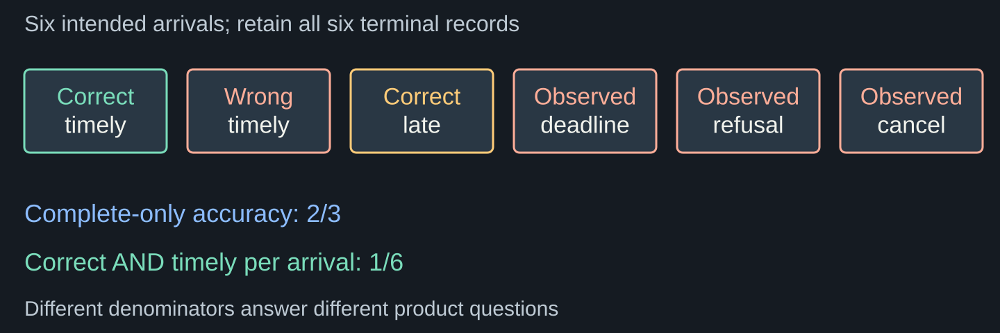
Teaching input / mechanism, not GPU capacity. Invented six-arrival counterexample: 3 complete, 2 correct, 1 correct and timely — completed-only accuracy 2/3 answers a different question than 1/6 useful arrivals.Учебный вход / механизм, а не GPU-ёмкость. Выдуманный контрпример из шести входящих: 3 завершены, 2 корректны, 1 корректен и вовремя — точность по завершённым 2/3 отвечает на другой вопрос, чем 1/6 полезных входящих.
The load is real text, not anonymous tokens
Нагрузка — настоящий текст, не анонимные токены
Topic 06 · draft · bounded examples
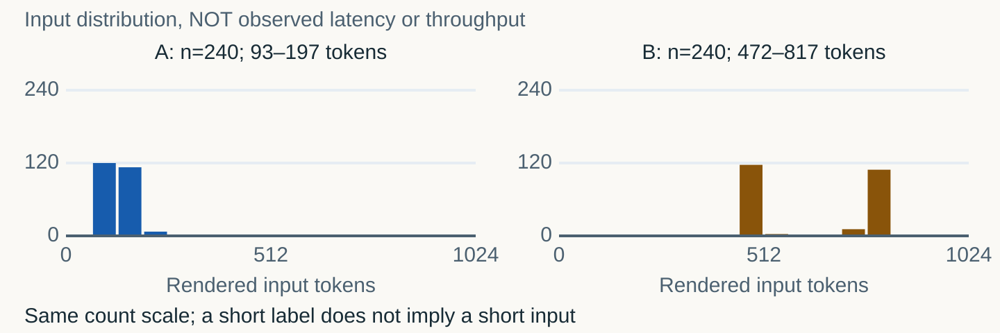
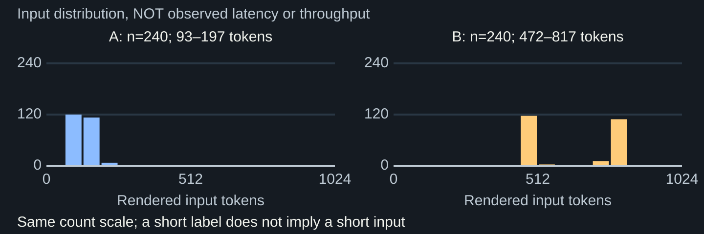
Teaching input / mechanism, not GPU capacity. Frozen synthetic corpus, n=240 per app: A 93–197 and B 472–817 rendered tokens, same bins and axes. Input evidence only — no measured latency lives here.Учебный вход / механизм, а не GPU-ёмкость. Замороженный синтетический корпус, n=240 на приложение: A 93–197 и B 472–817 отрисованных токенов, те же бины и оси. Только входные данные — измеренной латентности здесь нет.
Пропавшие исходы, дубли ID, чужие теги волн, невозможные метки времени (исход раньше прихода).
One function
audit_records classifies every record; a damaged wave is rejected, never silently repaired.
Одна функция
audit_records классифицирует каждую запись; повреждённая волна отбраковывается и никогда не чинится молча.
Three zones: rise, flatten, collapse
Три зоны: подъём, плато, обвал
Topic 06 · draft · bounded examples
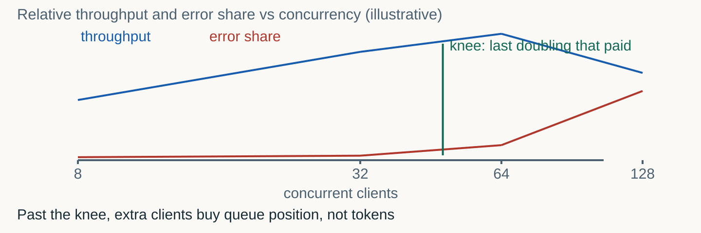
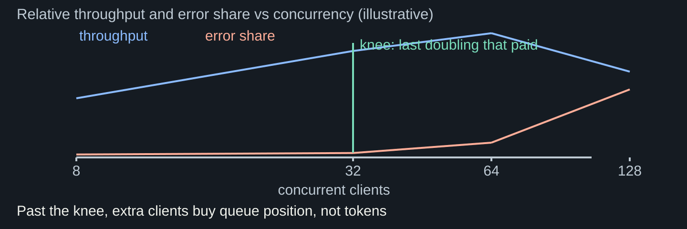
Teaching input / mechanism, not GPU capacity. Illustrative saturation shape: throughput rises while batching amortizes weight traffic, flattens as resources fill, collapses when queueing becomes timeouts. The measured companion on the next slide shows what the real workload did.Учебный вход / механизм, а не GPU-ёмкость. Иллюстративная форма насыщения: throughput растёт, пока батчинг амортизирует трафик весов, выходит на плато по мере заполнения ресурсов, обваливается, когда очереди превращаются в таймауты. Измеренный компаньон на следующем слайде показывает, что сделала реальная нагрузка.
What the pinned service actually did on a T4
Что запиненный сервис реально сделал на T4
Topic 06 · draft · bounded examples
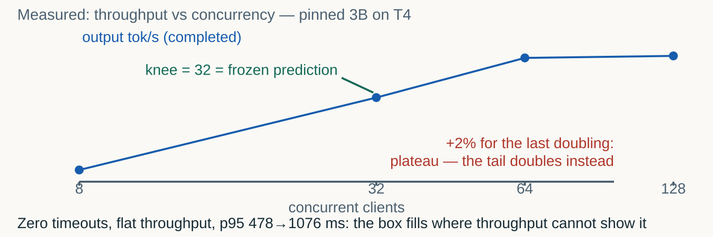
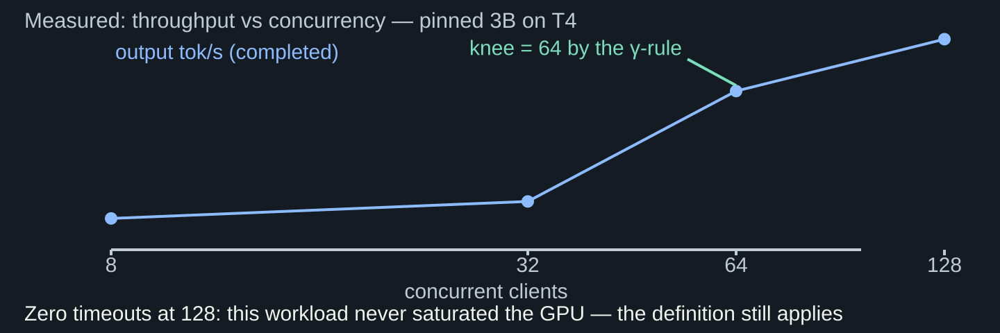
Teaching input / mechanism, not GPU capacity. Measured single run, 18 October 2026: 68 → 105 → 347 → 460 tok/s with zero timeouts at every wave; natural-EOS replies (~2 output tokens) never saturated this GPU; knee at 64 by the gain rule. Burst waves, single run — read its limits on the slide before quoting it. Evidence: seminars/runs/2026-10-18-topic06-t4-saturation/results.json.Учебный вход / механизм, а не GPU-ёмкость. Измеренный одиночный прогон, 18 октября 2026: 68 → 105 → 347 → 460 ток/с с нулём таймаутов на каждой волне; ответы с естественным EOS (~2 выходных токена) никогда не насыщали этот GPU; колено на 64 по правилу прироста. Бурст-волны, одиночный прогон — прежде цитировать, прочтите его пределы на слайде. Доказательство: seminars/runs/2026-10-18-topic06-t4-saturation/results.json.
Read the curve in three zones
Читай кривую по трём зонам
Topic 06 · draft · bounded examples
01
RiseПодъём
Batching amortizes weight traffic; tokens get cheaper per client.Батчинг амортизирует трафик весов; токены дешевеют на клиента.
batching paysбатчинг платит
02
FlattenПлато
Compute and KV fill; extra clients mostly buy queue position.Вычисления и KV заполняются; лишние клиенты в основном покупают место в очереди.
resources bindсвязывает ресурс
03
CollapseОбвал
Wall budgets turn into timeouts; errors absorb the demand.Стеночные бюджеты превращаются в таймауты; ошибки поглощают спрос.
errors, not tokensошибки, не токены
Three ways this plot lies
Три способа, какими этот график лжёт
Topic 06 · draft · bounded examples
TrickТрюк
What it hidesЧто скрывает
Lab defenceЗащита лабы
Dropped-error denominatorЗнаменатель без ошибок
Timeouts vanish; throughput looks flat and happyТаймауты исчезают; throughput выглядит ровным и счастливым
Outcome shares per wave, all recordsДоли исходов по волнам, все записи
Mean-only latencyТолько средняя латентность
The p95 tail crosses the SLO invisiblyХвост p95 пересекает SLO незаметно
p50 AND p95 per wavep50 И p95 по каждой волне
Silent retriesМолчаливые ретраи
Failed requests come back as successful onesНеудачные запросы возвращаются как успешные
Driver never retries; one record per attemptДрайвер не повторяет никогда; одна запись на попытку
\(S\)tokens / sGeometric mean of output throughputГеометрическое среднее выходного throughput
\(32, 64\)clientsThe judged waves — right at the knee regionОцениваемые волны — прямо в области колена
\(\mathrm{p95\ TTFT}_{64}\)≤ 0.8 sSLO gate at 64 clientsSLO-гейт на 64 клиентах
Round 03: speed bar 2562.8 tok/s; quality floors 0.531, 0.5355 and 0.4179; error budget one percent.
Раунд 03: скоростной бар 2562.8 ток/с; полы качества 0.531, 0.5355 и 0.4179; бюджет ошибок — один процент.
The judge contract (round-03 thresholds, verified) — this slide changes when the bars change, together.
Контракт джаджа (пороги round-03, верифицированы) — слайд меняется вместе с барами, в одном коммите.
The current round contract in one table
Контракт текущего раунда одной таблицей
Topic 06 · draft · bounded examples
GateГейт
Round 03 barБар раунда 03
Where the lab meets itГде лаба его закрывает
Speed S (geo-mean 32/64)Скорость S (гео-среднее 32/64)
2562.8 tok/s
throughput_by_wave on the real servicethroughput_by_wave на реальном сервисе
p95 TTFT at 64 clientsp95 TTFT на 64 клиентах
0.8 s
ttft_percentiles, completed onlyttft_percentiles, только завершённые
Quality floorsПолы качества
0.531 / 0.5355 / 0.4179
Upstream of the lab: the model must stay correctВне зоны лабы: модель должна оставаться корректной
Error rate per levelДоля ошибок на уровне
≤ 1%
Outcome shares — errors are dataДоли исходов — ошибки суть данные
Canaries under loadКанарейки под нагрузкой
similarity ≥ 0.8
The lab never optimizes against canariesЛаба никогда не оптимизирует против канареек
Choose, then defend in writing
Выбери, потом защити письменно
Topic 06 · draft · bounded examples
One function
choose_operating_point: the largest wave whose p95 TTFT and error rate both clear the SLO — with the binding constraint named.
Одна функция
choose_operating_point: наибольшая волна, где p95 TTFT и доля ошибок одновременно проходят SLO, — с поименованным связывающим ограничением.
One memo
Chosen wave vs your frozen prediction; the resource that bound first, with evidence; one alternative explanation you cannot exclude.
Одна записка
Выбранная волна против вашего замороженного предсказания; ресурс, который связал первым, с доказательством; одно альтернативное объяснение, которое вы не можете исключить.
Stretch: a second application arrives
Стретч: приходит второе приложение
Topic 06 · draft · bounded examples
Interference, measured honestly
The document classifier B shares the server; A and B are reported separately, never averaged into one bar.
Интерференция, измеренная честно
Классификатор документов B делит сервер с A; A и B отчитываются раздельно и никогда не усредняются в один столбец.
One protection
An in-flight cap K ∈ {1, 2, 4, 8, 16} limits B. Dev pair → freeze K with a forecast → one distinct held-out pair.
Одна защита
Потолок одновременных K ∈ {1, 2, 4, 8, 16} ограничивает B. Дев-пара → заморозка K с прогнозом → одна отличающаяся held-out пара.
Development first; the held-out pair is not another tuner
Сначала дев; held-out пара — не очередной тюнер
Topic 06 · draft · bounded examples
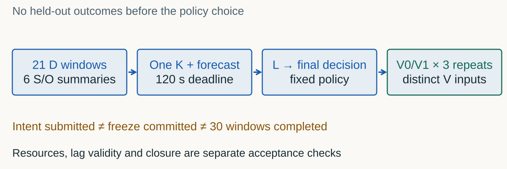
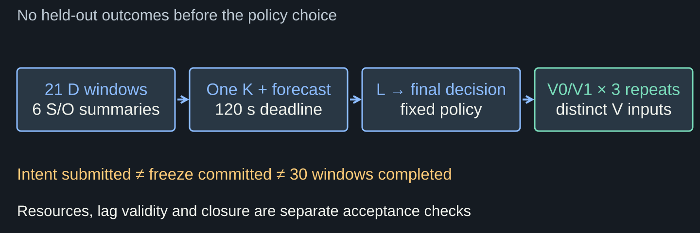
Teaching input / mechanism, not GPU capacity. Protocol boundary: freeze K on development evidence, then run the distinct held-out pair once. Actual driver policy.json proves the freeze, not a spoken intent.Учебный вход / механизм, а не GPU-ёмкость. Граница протокола: K замораживается по дев-доказательствам, затем отличающаяся held-out пара прогоняется один раз. Настоящий policy.json драйвера доказывает заморозку, а не проговорённое намерение.
The cap is a trade, not a dial
Потолок — это сделка, не ручка
Topic 06 · draft · bounded examples
StepШаг
ActionДействие
Frozen artifactЗамороженный артефакт
DevelopmentРазработка
A-only vs A+B at each K; read both applicationsТолько A против A+B на каждом K; читай оба приложения
dev table (journals)дев-таблица (журналы)
DecisionРешение
One K plus a written A/B forecastОдин K плюс письменный A/B-прогноз
policy.json, hashed at freezepolicy.json, хешируется при заморозке
ValidationВалидация
One held-out pair at the frozen KОдна held-out пара на замороженном K
interference reportотчёт об интерференции
Mock and measured are different claims
Мок и измеренное — разные заявки
Topic 06 · draft · bounded examples
What the mock proves
Journals, audits, curves, knee detection, freeze discipline — the entire analysis pipeline on a declared synthetic queue.
Что доказывает мок
Журналы, аудиты, кривые, детекция колена, дисциплина заморозки — весь аналитический конвейер на заявленной синтетической очереди.
What only the GPU run proves
Where this pinned model on a T4 actually saturates; which resource binds; the real interference magnitude.
Что доказывает только прогон на GPU
Где эта запиненная модель на T4 реально насыщается; какой ресурс связывает; настоящая величина интерференции.
The lab in four blocks and one stretch
Лаба в четырёх блоках и одном стретче
Topic 06 · draft · bounded examples
BlockБлок
Student buildsСтроит студент
Frozen evidenceЗамороженное доказательство
0 · Predict0 · Предскажи
kv_budget_bytes plus a written knee predictionkv_budget_bytes плюс письменное предсказание колена
predictions.json (pre-measurement)predictions.json (до измерений)
1 · Measure1 · Измерь
Runs the supplied wave driverГоняет предоставленный драйвер волн
raw-journal.jsonl (never edited)raw-journal.jsonl (не редактируется никогда)